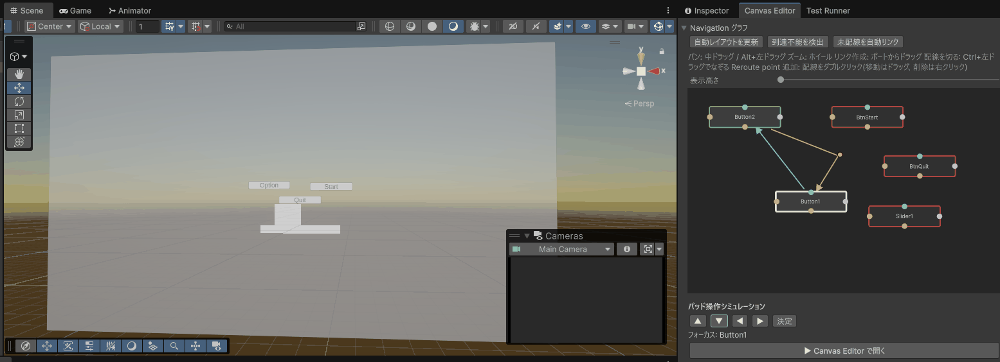
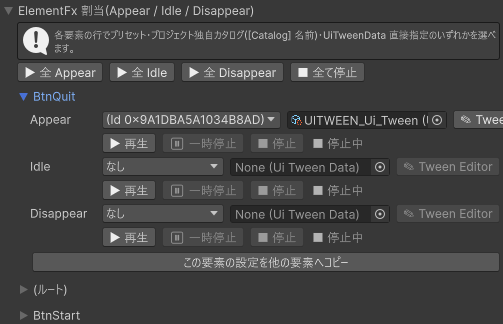
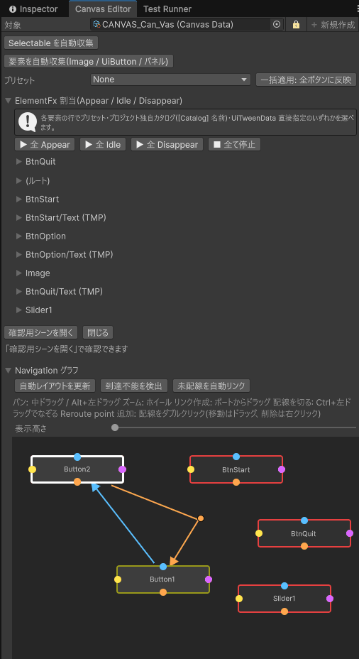

Canvas Editor は、Canvas(UI 画面)データを組み立てるための専用ウィンドウです。パッドのフォーカス移動(ナビゲーション)を矢印付きの図で編集し、要素ごとの演出(ElementFx)をまとめて割り当て、実際にシーン上で開いて確かめられます。
Tools > D-Drive > Editors > Canvas。Project で Canvas データを選ぶと自動で入ります(「🔒」を ON にすると追従しません)Tools > D-Drive > Editors > UI Tween · Preset Gallery(プリセットギャラリー)Prefab と Layer=Menu を設定する(作り方)
上から順に並んでいます。ウィンドウの中に UI の絵は出ません。見た目の確認は「確認用シーンを開く」で Game / Scene ビューを見ます。
| 要素 | 説明 |
|---|---|
| ツールバー(対象 / 🔒) | 編集する Canvas データ。「🔒」= 選択に追従しない |
| Selectable を自動収集 | Prefab 内の uGUI の Selectable(Button / Slider / Toggle など)を探して Navigation に行を足します(既存の行は残ります。4 方向は空 = Unity 自動のまま)。D-Drive の UiButton / UiSlider は拾いません。UiButton はグラフにはノードとして出るので、グラフでリンクを張るか、Inspector の Navigation に手で行を足してください。Prefab 未設定なら「Prefab を設定してください」 |
| 要素を自動収集(Image / UiButton / パネル)/ プリセット / 一括適用: 全ボタンに反映 | 「要素を自動収集」は Prefab 内の画像・UiButton・パネルから ElementFx の行を作ります(既存の行は保持)。「プリセット」で選んだ演出を「一括適用: 全ボタンに反映」で全 UiButton の Appear にまとめて入れます(「全ボタンの AppearPreset に … を設定しました」) |
| ElementFx 割当(Appear / Idle / Disappear) | 要素ごとに 1 箱(折りたたみ、初期状態は畳んだまま)で演出を割り当てます。上部の「▶ 全 Appear」「▶ 全 Idle」「▶ 全 Disappear」「■ 全て停止」で、登録済みの全要素のうち割り当てがあるものだけをまとめて再生・停止できます。読み方は下の「ElementFx 割当セクションの行の読み方」を参照。行が無いときは「ElementFx がありません(上の「要素を自動収集」で追加してください)」 |
| 確認用シーンを開く / 閉じる | EventSystem だけを置いた専用の空シーン(CanvasPreviewScene)に切り替え、そのまま画面を開きます(自分の Canvas 等と重ならずに確認できます)。すでに確認用シーンにいるときにもう一度押すと、シーンは開き直さず画面の表示だけやり直します(設定を変えた後の見直しに)。Hierarchy に [D-Drive] Canvas Preview と [D-Drive] UI Root が出ますがシーンには保存されず、ウィンドウを閉じる・別のシーンに移ると消えます。Appear / Idle の演出はエディタ上で実際に動きます。「閉じる」は演出を待たず即座に消します(Disappear の動きそのものを見たいときは、ElementFx 割当の各行にある「▶ 再生」で個別に確認してください)。ステータス: 「CanvasData を選択してください」→「「確認用シーンを開く」で確認できます」→「プレビュー表示中」/「表示に失敗しました」 |
| Navigation グラフ | 下の「Navigation グラフの操作」を参照 |
| パッド操作シミュレーション | 「▲」「▼」「◀」「▶」「決定」でパッド操作を再現します。「確認用シーンを開く」で開いている間だけ押せます。詳細は下の「パッド操作シミュレーション」を参照 |
| Inspector 埋め込み | Canvas データの全項目(Layer / Transition / Navigation / Buttons / Sliders / ElementEffects)を標準の Inspector として編集。ボタン・スライダーの配線はここの配列に行を足します(専用画面はありません)。Ctrl+Z 対応 |
| Validation | 問題ごとに色付きの箱(赤 = Error、黄 = Warning、青 = Info)。文言と対処は Canvas データのよくある警告。自動で直せる項目には右に「修正」ボタンが出ますが、現在の Canvas データの検査には無く、Prefab 内の UiSlider の検査結果にだけ出ることがあります。問題なしなら「Validation に問題はありません。」 |
| プリセットギャラリーとの行き来 | ギャラリー(Tools > D-Drive > Editors > UI Tween · Preset Gallery)で「適用先」に同じ Canvas データを選び、カードの「この要素に適用」を押すと、Canvas Editor の ElementFx の行に反映されます。逆にギャラリーには Canvas Editor から飛ぶボタンはありません |

見出し「ElementFx 割当(Appear / Idle / Disappear)」の下に、要素ごとの折りたたみ箱が並びます(初期状態は畳んだまま。要素のパスをクリックすると展開)。箱の見出しが要素のパス(Prefab ルート自身は「(ルート)」)で、展開すると中に 3 行あります。
| 要素 | 説明 |
|---|---|
| Appear / Idle / Disappear のラベル | 出現 / 常時(ループ)/ 消滅の 3 区間。Idle は Appear が終わってから始まり、閉じ始めで止まります |
| ドロップダウン | 「なし」/ 組み込みプリセット名 / [Catalog] 名前(プロジェクト独自に登録した演出)。「なし」を選ぶとその区間の設定は両方消えます。プリセットを選ぶと右の直接指定は消えます |
| 直接指定の欄 | UI Tween データをドラッグして入れる欄。入れるとドロップダウン側のプリセットは消えます(どちらか一方だけが有効) |
| 「✎ Tween Editor」ボタン | 直接指定(UI Tween データ)があるときだけ押せます。押すとUI Tween Editorが開き、この行が担当している実際の要素が自動でプレビュー対象に選ばれた状態で Track を編集できます。「確認用シーンを開く」がまだのときは自動で開いてから割り当てます |
| 「▶ 再生」/「⏸ 一時停止」/「■ 停止」 | UI Tween Editor を開かずに、この区間をその場で確認します。プリセット指定・直接指定のどちらでも押せます。「確認用シーンを開く」がまだのときは自動で開きます。「▶ 再生」は今の設定で確認用シーンの実要素に再生し(その要素で動いている他の演出、たとえば自動で流れている Idle は先に止めるので、混ざらずにその区間だけ見られます)、「⏸ 一時停止」は再生中だけ押せてその場で止め(もう一度押すか「▶ 再開」で続きから)、「■ 停止」は途中で片付けます(最終状態までは進めません)。右のラベルに「● 再生中」/「⏸ 一時停止」/「■ 停止中」が出ます |
| この要素の設定を他の要素へコピー | この箱の 3 区間の設定を、同じ Canvas の他の要素へまとめて配ります(「設定を他の要素へコピーしました」) |
| 要素 | 説明 |
|---|---|
| ▲ ▼ ◀ ▶ | フォーカスをその方向へ移します。Navigation に明示リンクがあればそれに従い、無ければその方向で一番近いボタン・スライダーへ。グラフでは現在位置が白い太枠になります |
| 決定 | フォーカス中の UiButton を押します(配線した OpenCanvas などが実際に動きます)。UiButton が無ければ uGUI のボタンに決定を送ります |
| フォーカス: … | 現在フォーカスしている要素のパス。まだ動かしていないときは「フォーカス: (未確認)」 |
EscapeOnLimit が ON のとき)。

「Navigation グラフ」の折りたたみ(最初は開いています)。Prefab 内の全ボタン・スライダーが、画面上の位置とだいたい同じ配置でノード(四角)として出ます(位置情報が無いものは 4 列に並びます)。これは配線を編集するための図であり、UI の見た目のプレビューではありません。
| 操作 | 説明 |
|---|---|
| 自動レイアウトを更新 | Prefab を変えたあとなどにノードを並べ直します |
| 到達不能を検出 | どこからもフォーカスが来られない要素を赤枠にして一覧します(「到達不能な要素が n 件あります(赤枠のノード):」)。無ければ「到達不能な要素はありません。」 |
| 未配線を自動リンク | 名前と違い、リンクは張りません。4 方向とも空(Unity 自動のまま)の要素を一覧するだけです(「未配線(Automatic のまま)の要素が n 件あります。Unity の自動ナビゲーションのまま動作します:」)。機械的にリンクを書くとレイアウト変更に追従しなくなるため、あえて書き換えない設計です |
| 表示高さ | グラフの高さ(320〜900) |
| リンクを張る | ノードの四辺にある丸いポート(▲上 / ▼下 / ◀左 / ▶右)を左ドラッグして、別のノードの上で離す。ドラッグ中は白い仮の矢印が出ます |
| 矢印の色 / 向き | 水色 = Up / オレンジ = Down / 黄色 = Left / 紫 = Right。矢印はノードとノードの隙間に描かれ、先端の三角(矢頭)が行き先を指します。行き来(例: A の Down と B の Up)を両方つないでいるときは、2 本の線がノード同士のちょうど真ん中で重ならないよう少しずらして並びます |
| ノードの枠色 | 通常 = ほぼ黒(Navigation に行が無いノードは背景が少し暗い)/ 黄土色 = Navigation には書かれているが Prefab 内に実体が無い(パス不整合)/ 緑 = FirstSelected / 赤 = 到達不能 / 白い太枠 = パッド操作シミュレーションの現在フォーカス |
| パン / ズーム | マウス中ボタンドラッグ、または Alt + 左ドラッグで移動。ホイールで拡大縮小(0.25〜2.5 倍) |
| ダブルクリック | その要素を Hierarchy で強調表示(Ping) |
| 右クリックメニュー | 「FirstSelected にする」/「Up を削除」「Down を削除」「Left を削除」「Right を削除」(無い方向は押せません)/「リンクを全て削除」(Navigation の行自体は残る)/「要素を Hierarchy で Ping」 |
| Undo | グラフの編集はすべて Ctrl+Z / Ctrl+Y で戻せます(グラフも描き直されます) |